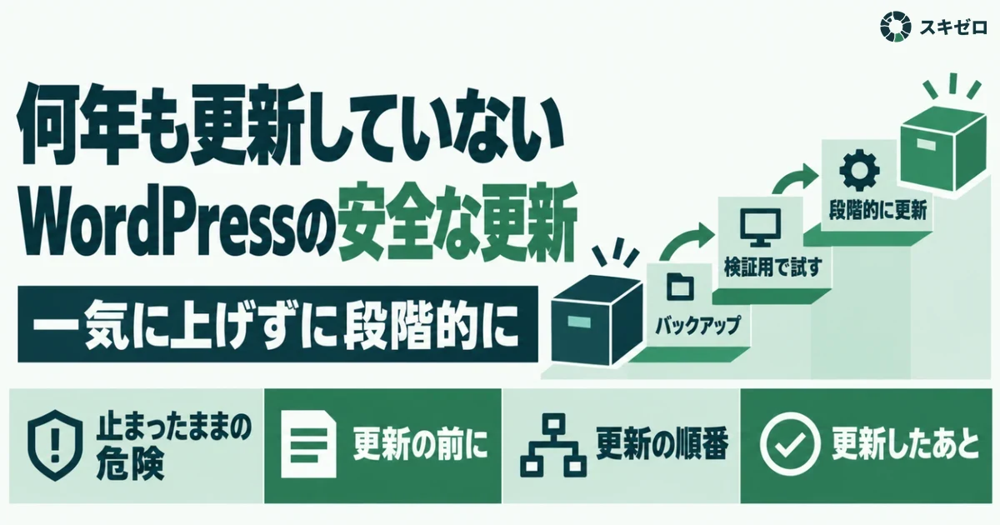
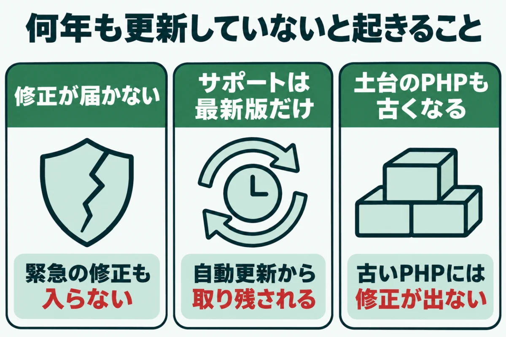
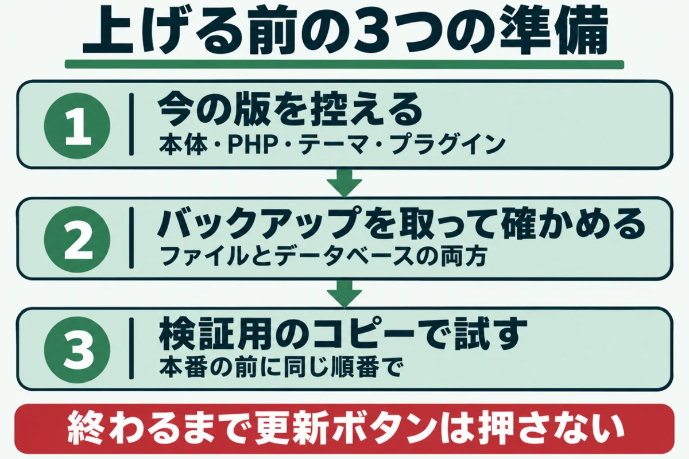
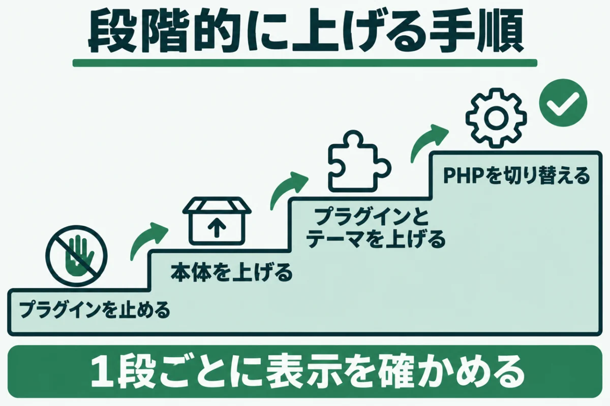
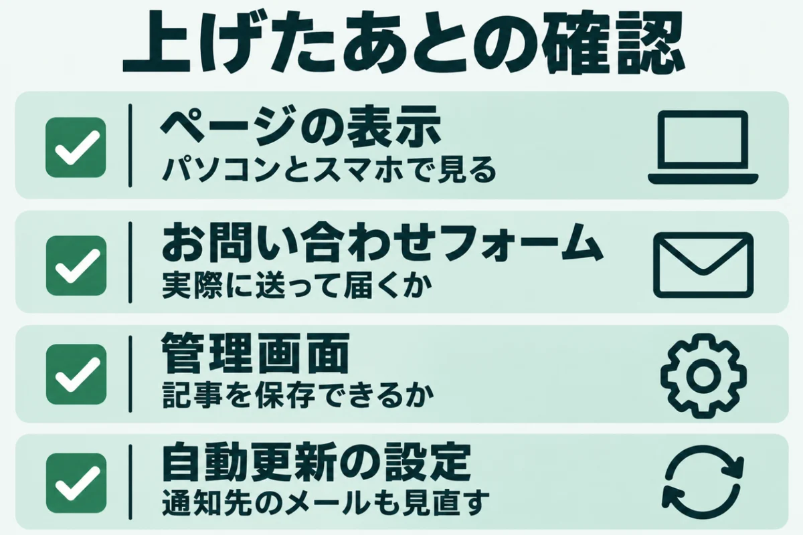
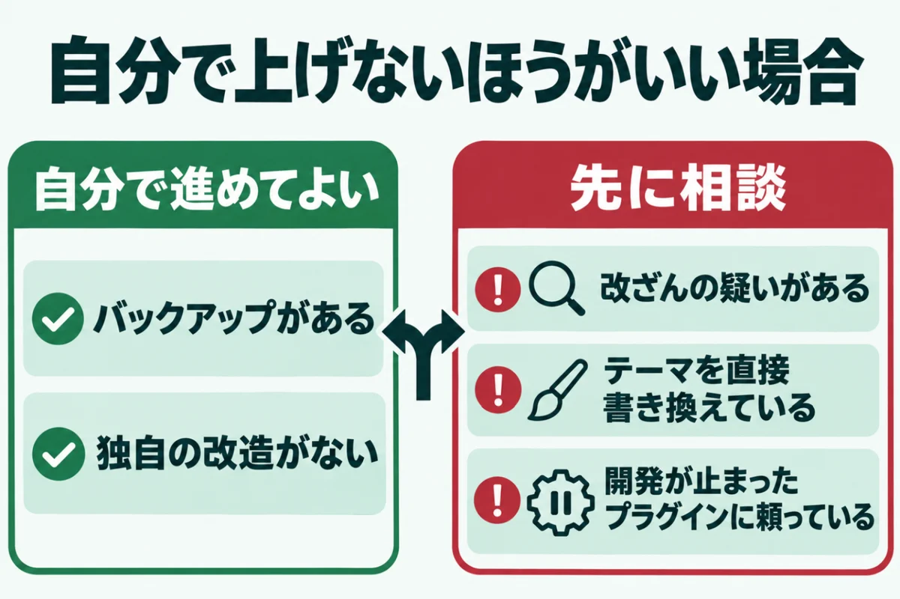

WordPressを何年も更新していないときの安全な更新手順一気に上げずに段階的に

「WordPressを何年も更新していない。今さら更新ボタンを押して、サイトが壊れないだろうか」と迷っていませんか？
古いまま置いておくのは危険ですが、準備なしに一気に上げると、画面が真っ白になることもあるのです。
この記事では、何年も更新していないWordPressを安全に上げる手順を紹介します。準備、順番、確認の3つに分け、自分で触らないほうがいい場合の見分け方もまとめました。
数字や仕様は、WordPress公式の発表を2026年11月11日に確かめたものです。運営者が自社サイトを点検して分かったことも入れています。
WordPressを何年も更新していないと起きること

WordPressを何年も更新していないサイトは、見た目が変わらなくても中身が古くなっています。公式にサポートされるのは最新版だけだからです。2026年11月11日時点の最新版は、10月28日に出た7.1.4でした。
古い版を使い続けると、見つかった弱点が直されないまま残ります。どんな状態になるのかを、3つに分けて確かめてください。
修正が届くのは新しい版だけ
WordPressの公式ページは、サポートするのは最新のメジャーリリースだけだと書いています。古い系統への修正は好意で配られるもので、保証も期限もありません。長く使える特別な版も用意されていないのです。
実際に、4.1から4.6までの版は、2025年7月でセキュリティ更新が打ち切られました。7.1.4の修正も、さかのぼって配られるのは4.7系までです。4.6以前のままのサイトには、もう修正が届きません。
- 参考：Supported Versions｜WordPress.org
- 参考：Dropping security updates for WordPress versions 4.1 through 4.6｜WordPress.org
- 参考：WordPress 7.1.4｜WordPress.org
自動更新から取り残される
WordPressには、小さな修正を自動で入れる仕組みがあります。2026年7月17日の7.0.2では、緊急の弱点が直されました。影響が大きかったため、公式が自動更新を強制的に動かしています。多くのサイトは、何もしなくても直った状態になりました。
ところが、自動更新を止めているサイトには、この修正が入りません。書き込みの権限が足りずに失敗しているサイトも同じです。何年も版が変わっていないなら、自動更新は動いていないと考えてください。
土台のPHPも一緒に古くなる
WordPressが古いサイトは、動かしているPHPも古いことがよくあります。公式が勧めるのはPHP 8.3以上です。7.4でも動きますが、すでにサポートが終わった版だと注意書きがあります。
2026年10月21日には、PHPに重大な弱点が2件見つかりました。8.2より前のPHPには、この修正が出ません。本体だけでなく、土台も合わせて上げる計画が必要です。PHPの期限は、PHPのサポート終了とは？放置の危険と確認・更新の手順｜8.2は2026年末で終了で確かめられます。
何年も更新していないWordPressを上げる前の3つの準備

何年も更新していないWordPressは、いきなり更新ボタンを押さないでください。戻せる状態を先に作ってから上げるのが、壊さないための基本です。公式の手順書も、バックアップが終わるまで更新しないよう求めています。
準備は次の3つです。どれもWordPressの管理画面と、サーバーの管理画面でできます。順番に進めましょう。
① 今の版を控える
最初に、今の状態をメモに残します。控えるのは、WordPress本体、PHP、テーマ、プラグインそれぞれの版です。本体の版は、管理画面の「更新」で分かります。PHPの版は、「ツール」の「サイトヘルス」で確かめてください。
古い管理画面には、サイトヘルスがないこともあるでしょう。その場合は、サーバーの管理画面でPHPの版を見てください。控えがあれば、不具合のときに元の版へ戻せます。確かめ方は、WordPressのバージョンを確認する方法（管理画面と外からの両方）にまとめました。
② バックアップを取って確かめる
次に、ファイルとデータベースの両方をバックアップします。ファイルは、テーマや画像が入ったWordPressのフォルダ全体です。データベースには、記事や設定が入っています。片方だけでは元に戻せません。
取ったあとは、中身が開けるかを確かめてください。開けないバックアップは、無いのと同じです。エックスサーバーの自動バックアップは、過去14日分が残ります。一部の古いサーバーでは7日分なので、日数も見ておきましょう。
③ 検証用のコピーで先に試す
できれば、本番と同じ内容のコピーを作り、先にそこで試してください。サーバー会社によっては、コピーを作る機能が用意されています。サブドメインにバックアップを戻して作る方法もあるでしょう。
コピーが作れないときは、アクセスの少ない時間に本番で作業します。その場合も、戻す手順を紙に書いてから始めると安心です。検証用のコピーは、検索に載らないよう設定してください。作業が終わったら消すことも忘れないようにしましょう。
何年も更新していないWordPressを段階的に上げる手順

準備ができたら、何年も更新していないWordPressを順番に上げていきます。本体、プラグインとテーマ、PHPの順に1つずつ進めるのがコツです。まとめて上げると、どこで壊れたのかが分からなくなります。
1つ上げるたびに、トップページと管理画面が開くかを見てください。問題がなければ次へ進みます。作業は、時間に余裕のある日に行いましょう。
プラグインを止めてから本体を上げる
公式の手順書は、本体を上げる前に全部のプラグインを無効にするよう書いています。古いプラグインが新しい本体とぶつかり、更新の途中で止まるのを防ぐためです。止める前に、有効だったものを控えておきましょう。
無効にしたら、管理画面の「更新」から本体を上げてください。途中で「データベースの更新が必要です」と出ることがあります。出たらボタンを押して、最後まで進めてください。上げたあとにログインできないときは、ブラウザのCookieを消すと入れることがあります。
版が大きく離れているときは段階的に
3.7以降の版なら、管理画面のボタン1つで最新版まで上げられる仕組みです。ただし公式の手順書は、メジャーリリースを2つ以上またぐ場合に、段階的な更新を勧めています。ぶつかりやデータベースの破損を減らすためです。
段階的に上げるときは、公式のリリースアーカイブから途中の版を入手します。1段上げるごとに表示を確かめると、原因を追いやすくなるでしょう。手作業での入れ替えでは、wp-config.phpとwp-contentを消さないでください。
プラグインとテーマ、最後にPHP
本体が上がったら、プラグインとテーマを更新します。そのあと、控えを見ながらプラグインを1つずつ有効に戻してください。戻すたびに表示を見れば、問題のあるものを特定できます。
PHPの切り替えは最後です。運営者が自社サイト15件を点検したときも、古い部品が見つかりました。PHP 8で止まる、2020年の版のプラグインです。先に新しい版へ入れ替えてから切り替えました。手順は、エックスサーバーでPHPのバージョンを上げる手順と事前チェックを見てください。
何年も更新していないWordPressを上げたあとの確認

何年も更新していないWordPressは、上げ終わったあとの確認が欠かせません。トップページだけ見て終わりにしないでください。古い作りの部分ほど、奥のページで崩れが出やすいからです。
確認で見る場所と、うまくいかなかったときの戻し方を知っておきましょう。次に同じ状態へ戻らないための設定も大切です。3つに分けて紹介します。
表示とフォームを確かめる
主なページを、パソコンとスマートフォンの両方で開きます。見るのは、レイアウトの崩れ、画像の抜け、メニューの動きです。更新の前に主なページの画面を保存しておくと、見比べやすくなります。
お問い合わせフォームは、実際に送ってメールが届くかを試してください。フォームの不具合は、見た目では気づけません。予約や決済の機能があるサイトは、そこも1件通して確かめましょう。管理画面で記事の保存ができるかも見ておくと安心です。
真っ白になったときの戻し方
画面が真っ白になったら、落ち着いて原因を1つずつ外しましょう。WordPress 5.2以降は、管理者あてにリカバリーモードの案内メールが届きます。メールのリンクから入り、問題のプラグインを止めてください。
メールが来ないときは、サーバーの管理画面でプラグインのフォルダ名を変えると止められます。名前を変えたフォルダのプラグインは、無効として扱われるためです。それでも直らなければ、バックアップから戻しましょう。戻せるのは、準備でバックアップを確かめた場合だけです。
次から止まらないようにする
最新版まで上がったら、小さな修正の自動更新が動いているかを確かめてください。管理画面の「更新」に、自動更新の状態が書かれています。プラグインも、一覧の画面から自動更新を選べるようになりました。
自動更新に任せきりにせず、月に1回は管理画面を開いてください。更新の通知が届くメールアドレスも見直します。退職した担当者のアドレスのままだと、失敗の知らせに誰も気づけません。使っていないプラグインは、この機会に削除しましょう。
何年も更新していないWordPressを自分で上げないほうがいい場合

何年も更新していないWordPressの中には、自分で上げないほうがいいサイトもあります。更新で直る問題と、更新で壊れる問題は別だからです。当てはまる場合は、手を付ける前に制作会社や専門家へ相談してください。
見分けるポイントは3つです。どれも、更新ボタンを押す前に確かめられます。当てはまるかどうか、1つずつ見ていきましょう。
すでに改ざんされた疑いがある
身に覚えのないページやユーザーがあるなら、先に調べます。改ざんされたサイトを更新しても、仕込まれたファイルは消えません。更新で上書きされるのは、本体のファイルだけだからです。
そのうえ、更新すると日時が変わり、侵入の手がかりが追いにくくなります。疑いがあるうちは、更新より先に記録を残してください。サインは、ホームページが改ざんされたかも？確認したい7つのサインと自分でできる確かめ方で確かめられます。
テーマを直接書き換えている
制作会社がテーマのファイルを直接書き換えているサイトは、注意が必要です。テーマを更新すると、書き換えた部分が消えてしまいます。デザインが崩れたり、独自の機能が動かなくなったりするでしょう。
子テーマを使っているかどうかは、管理画面の「外観」で分かります。子テーマがなく、独自の改造がある場合は要注意です。作った会社に、更新してよいかを先に聞いてください。連絡が取れないときは、検証用のコピーで試すのが安全です。
開発が止まったプラグインに頼っている
何年も更新が出ていないプラグインは、新しい本体やPHPで動かないことがあります。公式の配布ページから消えているものも同じです。予約や会員の機能をそのプラグインに任せているなら、止まったときの影響は大きくなります。
この場合は、代わりのプラグインへ置き換える作業が必要です。データの移し替えを伴うので、時間と費用がかかります。更新の前に、どのプラグインが止まっているかを一覧にしましょう。置き換えの見積もりを取ってから、日程を決めてください。
URLを入れるだけで、WordPressやPHPの版、プラグインなど8項目を無料で判定します。登録はいりません。
無料で診断する更新していないWordPressに関するよくある質問
何年も更新していないWordPressは、一気に最新版へ上げても大丈夫ですか？
3.7以降の版なら、管理画面から最新版へ直接上げる操作は可能です。ただし公式の手順書は、メジャーリリースを2つ以上またぐ場合に段階的な更新を勧めています。バックアップを確かめたうえで、検証用のコピーで先に試してください。問題が出なければ、本番でも同じ順番で進めましょう。途中の版は、公式のリリースアーカイブから入手できます。
更新していないWordPressは、どのくらい危険ですか？
公式にサポートされるのは最新版だけです。古い系統にも修正が配られることはありますが、保証はありません。4.1から4.6までの版は、2025年7月でセキュリティ更新が終わりました。7.1.4の修正がさかのぼって配られるのも、4.7系までです。古い版ほど、直されないままの弱点が残っている期間が長くなります。
WordPressとPHPは、どちらを先に上げればいいですか？
基本は、WordPress本体とプラグインを先に上げ、PHPを最後に切り替えます。新しいPHPは、古い本体やプラグインを動かせないことがあるためです。ただし、PHPが古すぎて最新の本体を入れられない場合もあります。そのときは、今のPHPで動く版まで本体を上げてから、PHPを切り替えてください。順番に迷ったら、検証用のコピーで試すと確かです。
更新したら画面が真っ白になりました。どうすればいいですか？
まず、管理者あてにリカバリーモードの案内メールが届いていないかを確かめます。届いていれば、リンクから入って問題のプラグインを止めてください。届かない場合は、サーバーの管理画面でプラグインのフォルダ名を変えると無効にできます。それでも直らないときは、更新の前に取ったバックアップから戻しましょう。エックスサーバーなら、サーバーの管理画面から復元を申し込めます。
自分で更新するのが不安なときは、どこに頼めばいいですか？
最初に、サイトを作った制作会社へ相談してください。テーマの改造や独自の機能を知っているのは、作った会社だからです。連絡が取れないときは、保守や更新の代行を受けている会社を探しましょう。依頼の前に、本体とPHPの版、プラグインの一覧を伝えると話が早く進みます。今の状態は、スキゼロの無料簡易診断でも外から確かめられるので、活用してください。
まとめ
WordPressを何年も更新していないサイトには、弱点の修正が届かなくなっています。公式にサポートされるのは最新版だけで、古いPHPにも修正は出ません。
上げるときは、版を控え、バックアップを確かめ、検証用のコピーで試してから始めてください。本体、プラグインとテーマ、PHPの順に、1つずつ確かめながら進めます。
改ざんの疑いや独自の改造があるなら、更新ボタンを押す前に、作った会社へ相談しましょう。
まずは、今の状態を知るところから。
URLを入れるだけで、数十秒で判定が出ます。登録はいりません。